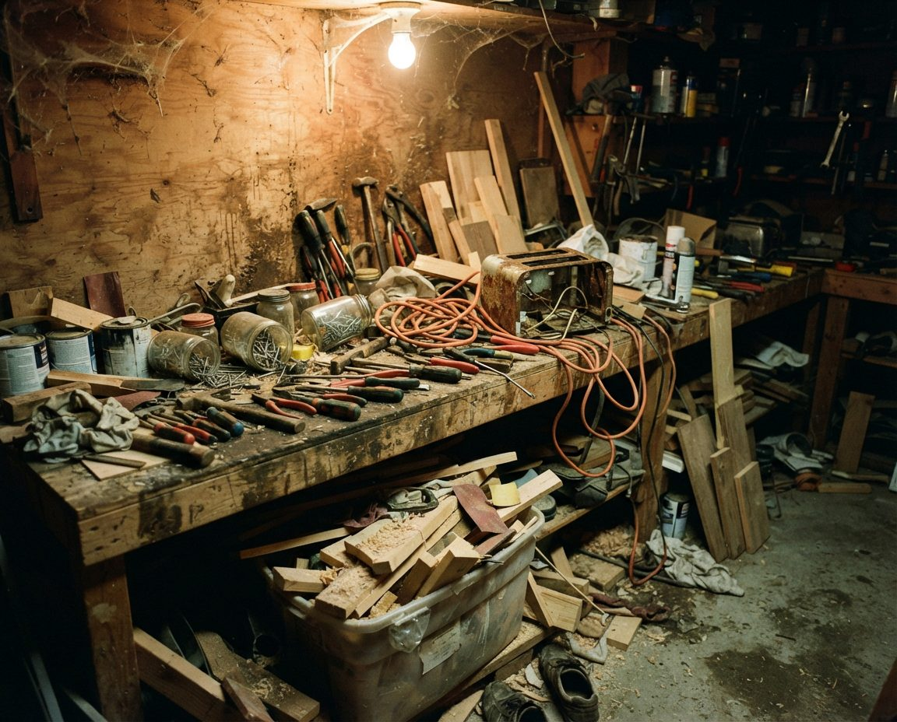
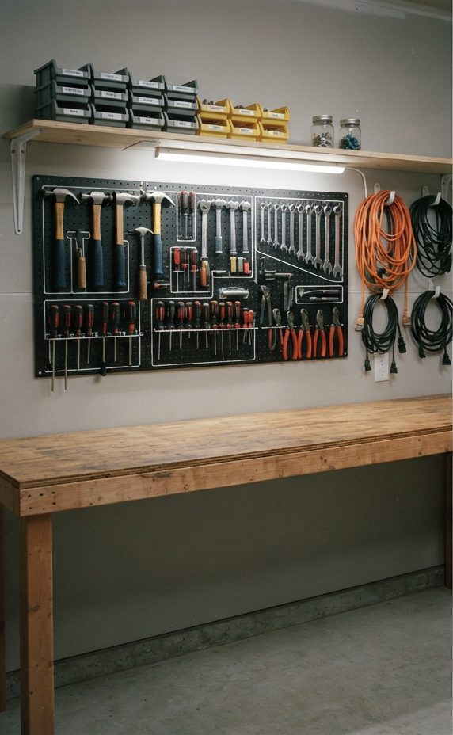
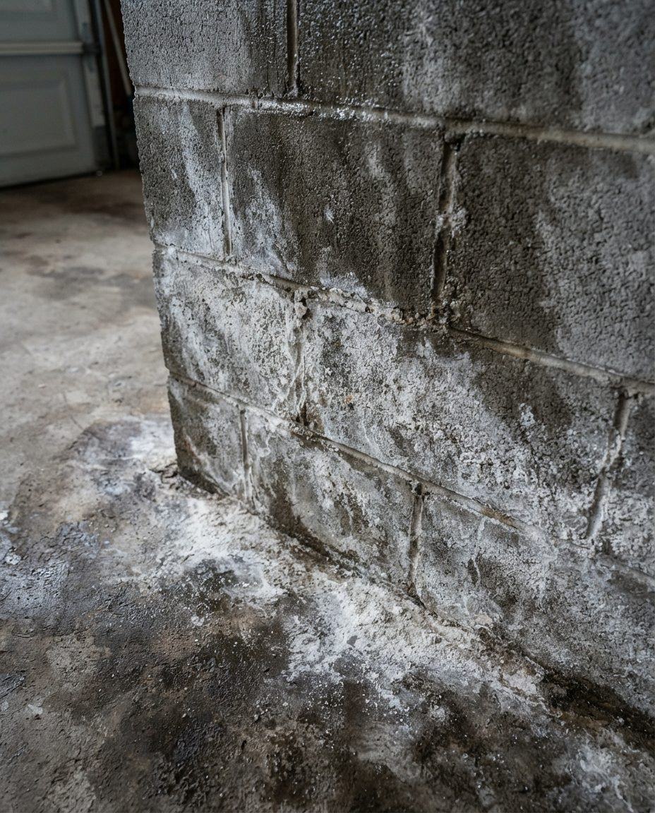
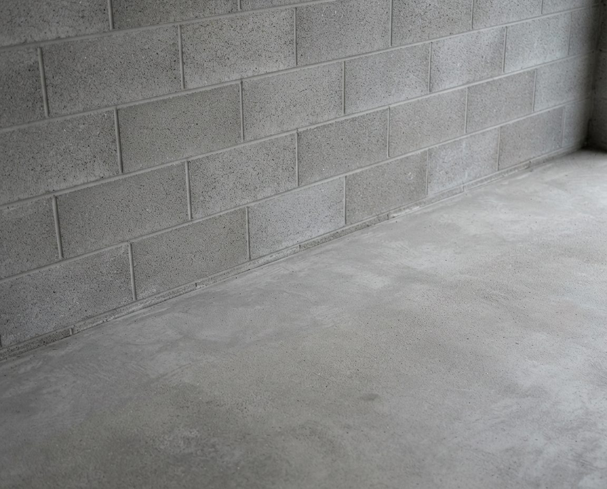

New Westminster has some of the oldest garages in the province and some of the newest. We design storage for both: shallow systems fixed into century-old framing in Queen's Park and Sapperton, layouts that respect the wet uphill wall on Brow of the Hill, everything lifted off the slab in Queensborough, and tandem plans that keep a Victoria Hill townhouse garage parkable.
New Westminster was founded in 1858, served as the capital of the Colony of British Columbia until 1866, and was incorporated in 1860. It is also compact. The 2021 census counted 78,916 people on about 15.6 square kilometres of land, which made it the second most densely populated municipality in Canada after Vancouver. That combination of age and density means the garages here vary more from one street to the next than anywhere else we work.
In practice we see four types. Detached lane garages behind pre-war houses in Queen's Park, Glenbrooke North and Sapperton. Garages cut into the slope that climbs from the Fraser through Brow of the Hill, Victory Heights and Massey Heights. Newer garages on delta soil in Queensborough, across the North Arm on Lulu Island. And tandem townhouse garages and parkade stalls in Victoria Hill, the Brewery District in Sapperton, Uptown and along the Quay. Each one fails in a different way when it is organized from a catalogue, so the first thing we do at an assessment is work out which one you have.
Many of the detached garages behind older New Westminster houses were built when cars were much narrower and shorter than a current crossover. The usual result is a garage where the car technically fits but the doors cannot open, and everything else lives in a pile at the back. A standard 24-inch-deep shelving unit makes that worse, because it eats the space you need to walk past the bumper.
We start by measuring the car, not the garage. The parking envelope gets marked on the floor with room to open the driver's door, and storage is designed around what is left. That usually means 12- to 16-inch shelving on the side walls, bikes hung vertically so they sit flat against the wall, and a shallow cabinet or rail at the back above bumper height. If the car does not need to fit, the garage becomes a workshop or storage room and the plan changes completely, so that decision comes first.


Measure the car firstThis Metro Vancouver garage shows the approach we use in tight New West singles: mark the parking envelope, then fit shallow storage to the walls around it.
Old framing needs its own rules. Timber in a hundred-year-old garage varies stud to stud, some walls are board sheathing with no lining, and roof framing was rarely designed to carry a loaded ceiling rack. We check every fixing point, anchor only into sound wood, and leave overhead storage out unless the rafters and ties are clearly up to it. If we find soft or rotted framing, you hear about it before anything is hung on it.
New Westminster adopted the Queen's Park Heritage Conservation Area in June 2017. It covers 702 homes in about one square kilometre and protects existing houses built before 1941, with some exceptions. The City says owners in the HCA may need a Heritage Alteration Permit for certain renovations, to demolish a house, to build a new one, or to add a laneway or carriage house.
Garage organization is interior work: shelving, wall track, cabinets and racks. It does not change the streetscape the HCA is designed to protect. Where a plan touches the outside of the building, such as a new man door, a window for light, or a vent to help a damp garage dry out, check with the City's heritage planning staff before it goes ahead. We will flag those points in your written plan so they do not come as a surprise.
Heritage houses also tend to come with long ownership, and long ownership fills a garage with tools. We often find two or three generations of hand tools, hardware tins and lumber offcuts. The fix is a single workbench zone with a pegboard or rail above it, duplicates pulled out, and the good tools hung where they can be seen.


One bench, tools on the wallA Metro Vancouver workbench before and after. Duplicates go, the tools you use get hung in sight, and the bench top stays clear for actual work.
New Westminster's laneway and carriage house program began in 2017. The City's rules have a direct effect on garages: a lot can have only one detached accessory structure, which is either a laneway or carriage house or a detached garage. Units are capped at 89 square metres, two parking spaces are required in total, and tandem parking does not count. The City also notes that converting an existing garage into a laneway house is very challenging under the Building Code, so most projects replace the garage outright. Queensborough is excluded from the program.
If you are planning one, the garage and everything in it has a deadline. That is a good time to book a declutter, because every item you keep needs a new home in a smaller footprint: a shed, a basement storage room, an under-stair closet, or the storage built into the new unit. We sort the contents with you, route what goes to donation and recycling before anything is landfilled, and design compact storage for whatever space remains. Our laneway garage clearing guide covers the clearing side in more detail.
Most of New Westminster sits on a slope rising from the river, and on streets through Brow of the Hill, Victory Heights and Massey Heights the garage is often built into that grade. One wall holds back wet ground. It is the coldest wall in the room and the one where water finds the joint between wall and slab.
That wall should not carry your heaviest shelving. Bins pressed against wet concrete trap moisture, hide the first signs of water coming in, and put anchors into the wall most likely to crack. We put heavy anchored systems on the side walls and leave the uphill wall clear, or give it light freestanding shelving with an air gap behind it. If the wall already shows water entry or mould, that gets cleaned and documented first. Our guide to mould in a Vancouver garage explains why it starts there.

The coast's wet winters do the rest. Cardboard on a damp slab softens and grows mildew within a season, so anything kept long-term moves into rigid lidded bins. Metal tools stay off cold exterior walls, where condensation forms overnight, and go into drawers or onto an interior wall instead.
Queensborough sits on the eastern end of Lulu Island, across the North Arm of the Fraser from the rest of the city. According to reporting in the New West Record on the City's flood studies, a dike about seven kilometres long protects roughly 350 hectares of the neighbourhood, which makes up about two-thirds of New Westminster's floodplain. The same studies project flood levels 60 to 90 centimetres higher by 2050.
Day to day, the bigger issue is the shallow water table. Slab moisture and the white mineral bloom called efflorescence are close to normal on delta soil, the same as in Richmond garages. So the Queensborough rule is that nothing lives on the floor. Everything sits on shelving or racks, the lowest shelf is high enough to mop under, and the most valuable or irreplaceable items go highest. Documents, photos and anything you could not replace belong in the house rather than the garage. If you are thinking about a floor coating, a moisture test comes first.


Clean the bloom, then lift everythingThis Metro Vancouver slab shows efflorescence before and after cleaning. On delta soil it tends to come back, which is why storage stays off the floor.
Newer development in New Westminster is mostly townhouses and strata buildings: Victoria Hill, the Brewery District on the old Labatt site in Sapperton, Uptown around Sixth and Sixth, and the Quay downtown. Five Expo Line stations sit inside city limits (22nd Street, New Westminster, Columbia, Sapperton and Braid), and plenty of households here run one car or none.
In a tandem garage, that is the opportunity. If the household has one car, the back stall can become a proper storage and gear room without losing parking. If there are two cars, the job is to keep the full length parkable: shallow shelving along one side, bikes vertical, seasonal bins on an overhead rack above the hood line. Before anything is drilled we read the strata bylaws, because many restrict anchoring into shared walls, and the BC Fire Code limits flammable liquids in residential garages and storage lockers.


Two stalls, one car wideA Metro Vancouver tandem before and after. Storage runs along one wall and overhead so the floor length stays usable.

Bikes get the best wall in a car-light household. We hang daily bikes on vertical hooks at a height you can lift to, with a drip spot underneath for wet rides home, and put seldom-used bikes on ceiling hoists where the structure allows.
Every New Westminster plan uses the same zone method we run across Metro Vancouver and Alberta, scaled to the garage. Daily items (bikes, the recycling, shoes, the stroller) go nearest the door you use most. Weekly items such as garden tools and sports gear sit at waist to shoulder height. Seasonal items such as holiday decorations, camping kit and patio cushions go high. Chemicals go in a closed metal cabinet away from the door into the house. A workbench zone gets its own wall if there is room for one.
On the coast we add a shelf for the household earthquake kit and spare water: low, near the man door, in sealed bins, with nothing heavy stored above it. Tall shelving units are anchored to studs as standard. If you want to compare how the method plays out elsewhere, our Burnaby garage organization page covers the hillside doubles next door, and the garage storage solutions we build in Calgary show the same zones in a dry, cold climate.
Service pricing below. Storage hardware is quoted separately at cost and specified to a budget you set: typically $300 to $900 for a single or tandem garage, $600 to $2,500 for a full double.
We cover the whole city. Here is roughly what we expect to find in each part of it.
The oldest housing in the city, much of it inside or next to the heritage conservation area. Detached lane garages, narrow singles, original framing and a lot of inherited tools. Sapperton also has the newer Brewery District buildings near Royal Columbian Hospital.
Steeper streets where garages are often built into the grade, with uphill-wall moisture and sloped lane access. Connaught Heights, near 22nd Street Station, mixes older houses with newer infill.
Mostly strata: townhouse tandems, parkade stalls and storage lockers, with bylaws that shape what can be installed.
Newer detached houses and townhouses on Lulu Island delta soil, where every storage plan starts from the assumption that the slab will be damp.
If the garage needs a deep clean, moss removal or mould treatment before anything else, start with garage cleaning in New Westminster. For shelving and rack options in detail, see garage storage solutions in Burnaby. Across the Brunette, see garage organization in Coquitlam, or the full list on our Metro Vancouver services hub.
Every job begins with a free on-site assessment. We measure the garage and the car, mark the parking envelope, check which walls and framing can carry load, look for moisture that would undermine a new system, read your strata bylaws if they apply, and go through what you own and when you use it. You get a written zone plan and a fixed price before anything is booked.
Design and installation starts at $549 for a single-car or tandem garage, $899 for a standard double, and $1,800 for a full transformation that bundles decluttering, a deep clean and the organization build. Hardware is quoted separately at cost: typically $300 to $900 for a single or tandem and $600 to $2,500 for a full double.
Yes, with care. We check every fixing point, anchor only into sound framing, use shallow shelving so the narrow floor stays usable, and skip ceiling racks unless the rafters and ties are clearly up to the load.
The City says owners may need a Heritage Alteration Permit for certain renovations, demolition, new houses, and laneway or carriage houses. Our work is interior shelving and racks. If a plan changes the outside of the building, such as a new door, window or vent, check with the City's heritage planners first.
A New Westminster lot can have one detached accessory structure: a laneway or carriage house, or a detached garage. If the new unit replaces the garage, its contents need a new home. We sort them with you and design compact storage for the space that remains.
Assume water at floor level. Everything goes on shelving or racks, never on the slab, with the lowest shelf high enough to clean under. Documents, photos and anything irreplaceable belong in the house. Seasonal items go highest.
Yes. We keep the full length parkable, run shallow shelving along one wall, hang bikes vertically and put seasonal bins overhead. We read your strata bylaws first, since many restrict drilling into common walls.
All of them: Queen's Park, Glenbrooke North, Sapperton, Brow of the Hill, the West End, Connaught Heights, Victory Heights, Massey Heights, Uptown, Downtown and the Quay, Victoria Hill, the Brewery District and Queensborough.
No, the services can be booked separately. Long-held New Westminster homes often carry decades of contents, so many clients bundle a declutter. The Coquitlam Transfer Station is close, which keeps disposal time down.
Free on-site assessment. Written zone plan and fixed price before we start. Built for old framing, wet walls, delta slabs and tight tandems.
Serving all of New Westminster: Queen's Park, Glenbrooke North, Sapperton, Brow of the Hill, the West End, Connaught Heights, Victory Heights, Massey Heights, Uptown, Downtown, Victoria Hill and Queensborough.